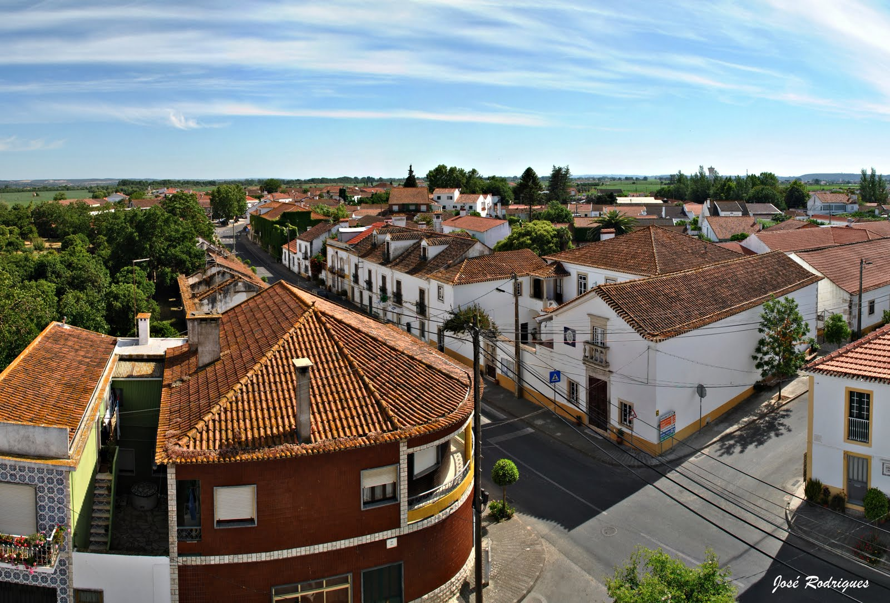
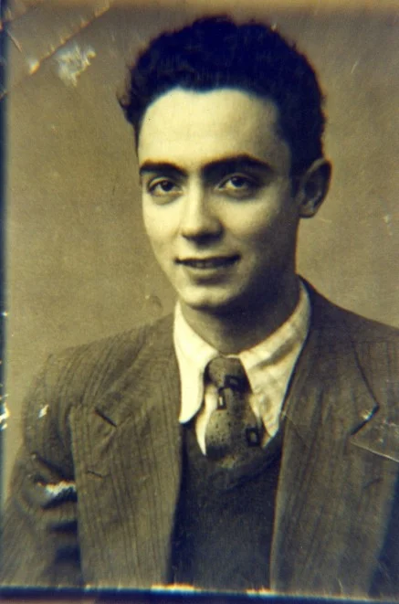
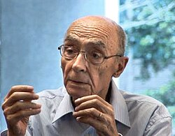
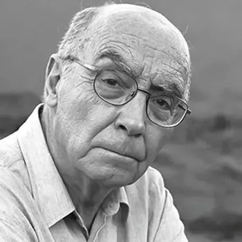

01
Biografia

1922 — 1940s
Nascimento e Infância
Nascido a 16 de novembro de 1922 em Azinhaga, Ribatejo, numa família humilde de camponeses. O apelido "Saramago" foi erroneamente adicionado num registo civil — o nome de uma planta silvestre que acabaria por definir um dos maiores nomes da literatura universal.
1940s — 1960s
Formação Autodidata
Impossibilitado de concluir estudos superiores por razões económicas, Saramago formou-se nas bibliotecas públicas de Lisboa. Serralheiro, desenhador, funcionário público, tradutor — cada profissão enriqueceu o olhar de quem mais tarde daria voz aos esquecidos da História.

1998 · Estocolmo
Prémio Nobel da Literatura
O primeiro escritor de língua portuguesa distinguido com o Nobel. A Academia Sueca elogiou a sua capacidade de tornar o ilusório e imaginário palpável, graças a parábolas sustentadas pela imaginação, compaixão e ironia. Um momento histórico para a língua portuguesa no mundo.
1969 — 1992
Percurso Político e Literário
Membro do Partido Comunista Português desde 1969, Saramago comprometeu-se com causas políticas e sociais. Após o 25 de Abril foi diretor-adjunto do Diário de Notícias. O reconhecimento literário chegou com Memorial do Convento (1982) e consolidou-se nas décadas seguintes.
1992 — 2010
Exílio em Lanzarote
Depois de o governo português retirar O Evangelho segundo Jesus Cristo de uma candidatura europeia por motivos religiosos, Saramago partiu indignado para as Ilhas Canárias. Viveu em Lanzarote com a sua companheira Pilar del Río até à morte, a 18 de junho de 2010, com 87 anos.



02
Temas Abordados
O Poder e a Opressão
Crítica às estruturas políticas, religiosas e institucionais. Em Ensaio sobre a Cegueira, o Estado colapsa perante a crise, revelando a crueldade que o poder exercia sobre os mais vulneráveis.
Identidade e Existência
Em O Homem Duplicado, um professor descobre um homem exatamente igual a si, gerando uma crise que questiona a unicidade do ser. A identidade é sempre frágil, provisória, questionável.
História e Memória
Em Memorial do Convento, são os trabalhadores anónimos — não os reis — a construir a narrativa. A releitura crítica da História portuguesa é um pilar central de toda a sua obra.
Fé, Religião e Sagrado
Ateu declarado, Saramago apresentou em O Evangelho segundo Jesus Cristo um Jesus humano e contraditório. Caim revisita o Antigo Testamento questionando a justiça divina.
Condição Social
Com raízes operárias e ideologia marxista, Saramago dá voz aos marginalizados. Levantado do Chão retrata décadas de exploração e resistência dos trabalhadores rurais do Alentejo.
A Morte e o Tempo
Em As Intermitências da Morte, a morte decide fazer greve, com consequências paradoxais. O fantástico serve como veículo para explorar o medo da finitude e o sentido da vida humana.
03
Características
da Escrita
Pontuação Não Convencional
Saramago abandona as aspas nos diálogos, substituindo-as por vírgulas e maiúsculas intercaladas no corpo do texto. Esta fusão entre narrador, personagens e discurso direto cria um fluxo hipnótico e absolutamente singular na literatura mundial.
Frases Longas e Ritmo Oratório
As suas frases podem estender-se por parágrafos inteiros, aproximando-se da tradição oral e da enumeração retórica. A cadência é quase musical — o leitor é arrastado por um raciocínio que se vai desdobrando, contraditório e reflexivo.
O Narrador Interventivo
O narrador de Saramago não é neutro: comenta, ironiza, digride e dialoga com o leitor. Esta presença autoral forte cria uma cumplicidade entre o texto e quem lê, tornando a leitura num diálogo permanente.
Realismo Alegórico
Premissas impossíveis — uma epidemia de cegueira branca, a morte em greve — servem de alegoria à condição humana. O fantástico é sempre um veículo para verdades sociais e filosóficas concretas, não um fim em si mesmo.
Ironia e Humor
A ironia — por vezes negra, por vezes suave — é uma forma de conhecimento e de resistência. Saramago usa-a para criticar instituições, expor contradições e subverter as expectativas do leitor de forma inteligente e frequentemente devastadora.
Intertextualidade
Saramago dialoga com a Bíblia, a História e outros textos literários, reescrevendo-os criticamente. Esta intertextualidade serve para questionar versões oficiais, reabilitar perspetivas marginalizadas e desafiar o leitor a pensar de forma diferente.
04
Bibliografia
- 1947Terra do Pecado
- 1977Manual de Pintura e Caligrafia
- 1980Levantado do Chão
- 1982Memorial do Convento
- 1984O Ano da Morte de Ricardo Reis
- 1986A Jangada de Pedra
- 1989História do Cerco de Lisboa
- 1991O Evangelho segundo Jesus Cristo
- 1995Ensaio sobre a Cegueira
- 1997Todos os Nomes
- 2000A Caverna
- 2002O Homem Duplicado
- 2004Ensaio sobre a Lucidez
- 2005As Intermitências da Morte
- 2008A Viagem do Elefante
- 2009Caim
- 2011Claraboia (póstumo)
- 1979A Noite
- 1980Que Farei com Este Livro?
- 1987A Segunda Vida de Francisco de Assis
- 1993In Nomine Dei
- 2005Don Giovanni ou O Dissoluto Absolvido
- 1966Os Poemas Possíveis
- 1970Provavelmente Alegria
- 1975O Ano de 1993
- 1971Deste Mundo e do Outro (crónicas)
- 1973A Bagagem do Viajante (crónicas)
- 1974As Opiniões que o DL Teve (crónicas)
- 1976Os Apontamentos (crónicas)
- 1978Objecto Quase (contos)
- 1994–98Cadernos de Lanzarote (5 vols., diários)
- 2006As Pequenas Memórias (memórias)